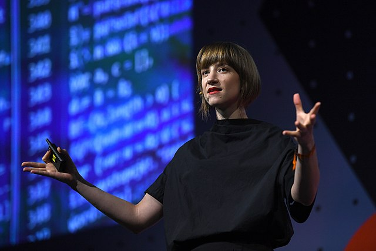
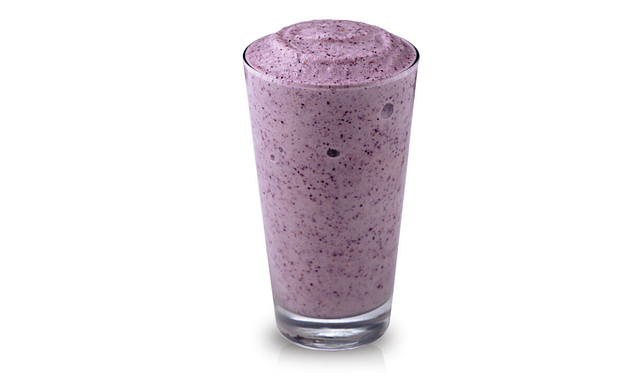
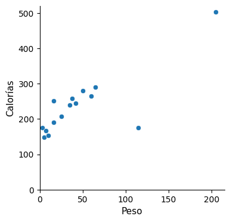
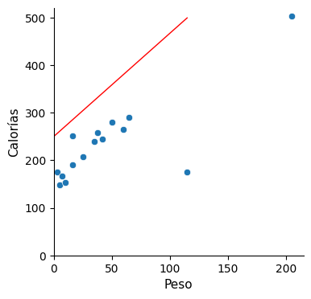
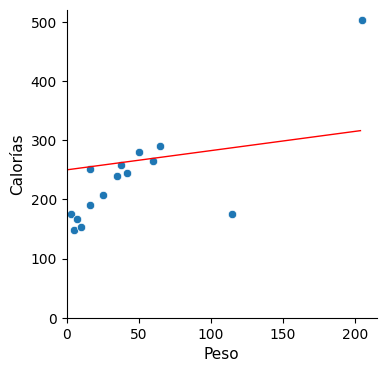
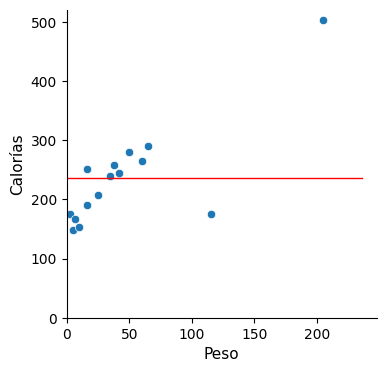
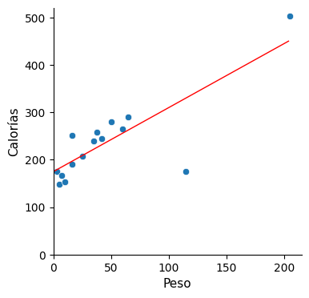
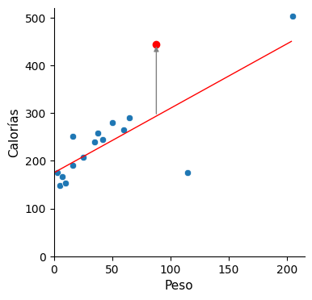
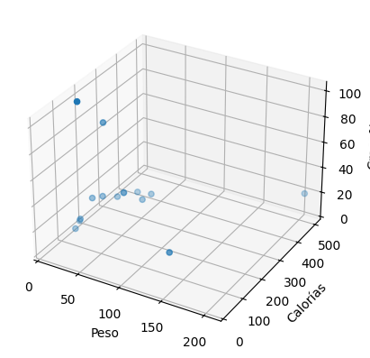

La definición de atributos en aprendizaje automático#

2024-01-25
La importancia de incluir en el modelo los atributos adecuados la explica claramente Cassie Kozyrkov en su charla titulada Making Friends with Machine Learning («Haciéndonos amigos del aprendizaje automático.»). En ella plantea el problema de predecir las calorías que contiene un batido que se compone básicamente de un yogur y un ingrediente añadido.

En la presentación, Kozyrkov muestra la imagen de un batido y sin más pistas pregunta al público de cuántas calorías se compone la bebida. Algunos se atreven a arrojar una cifra (100; 200; 500…). A continuación Kozyrkov confiesa que ha lanzado la pregunta así, sin facilitar más datos, porque quería hacer la prueba de ver quiénes de entre el público mostraban una buena predisposición hacia el aprendizaje automático. Porque según ella, la actitud con respecto a Machine Learning no es la del perfeccionismo, la de pensar con cautela y encontrar la respuesta al primer intento sin intentarlo a no ser que se vaya a dar en el clavo. No, la actitud correcta es probar y ver lo que pasa. Equivocarse, porque vamos a tener que repetirlo una y otra vez, ensayándolo en numerosas ocasiones hasta que funcione. Y es bueno intentar algo para empezar a hacer camino y saber por dónde tirar a continuación.
En cualquier caso, efectivamente, hace falta algún dato más para empezar a trabajar. La fotografía mostrada es la del batido número 16 que ha preparado, ya que previamente ha elaborado otros 15 cuyas calorías son estas: 265, 281, 207, 148, 240, 154, 176, 290, 167, 245, 176, 259, 251, 503, 191.
Lo primero que se nos ocurre es calcular la media de estos datos: 236,9 ≈ 237. Y ante la cuestión del número de calorías que tiene el batido número 16 podríamos aproximar la respuesta dando un valor que se acercara a dicha media de 237 calorías. Es decir, basta que hayamos recibido algo de información para que el inicialmente amplio abanico de posibles respuestas se haya reducido un tanto puesto que ahora la aproximamos a la media.
Pues bien, resulta que el batido mostrado por Cassie tiene 445 calorías, de manera que nos hemos desviado bastante en nuestra aproximación, en concreto el error ha sido de 445 – 237 = 208 calorías. Por tanto, hace falta más información. ¿Ayudaría disponer del peso en gramos del ingrediente del que se compone el batido? En la siguiente gráfica se representan dichos datos.

La idea parece prometedora ya que el peso del ingrediente muestra cierta correspondencia con las calorías (a más peso, el batido tiende a tener más calorías). Intentemos aproximar esta correspondencia mediante una línea recta, que es de lo que se trata cuando aplicamos la llamada regresión lineal.
La línea recta se compone de dos parámetros, la pendiente y la ordenada en el origen, cuyos valores habrá que encontrar para cada recta concreta.
Calorías = Ordenada + Pendiente * Peso
Kozyrkov plantea las siguientes rectas:
  
Ninguna de estas rectas propuestas satisface al público, y menos aún esta última. Y sin embargo, dice Cassie, esta última es precisamente el modelo que teníamos inicialmente, cuando no disponíamos de la información del peso y lo único de lo que disponíamos era de la media.
Calorías = 236,9 + 0 * Peso
Pero de esto trata precisamente la creación de atributos (feature engineering), de incorporar al modelo variables que ayuden a aproximar la solución. Y cuando las añadimos, de pronto mejoramos el resultado. En la medida en que agregamos información relevante, la previsión mejora. Es lo que estamos haciendo desde que tenemos en cuenta el peso del ingrediente del batido.
De manera que el objetivo ahora es encontrar una línea recta que se ajuste lo máximo posible a los puntos, es decir, que minimice el error de desviación del conjunto. Se utiliza para ello el RMSE (Root Mean Squared Error), que es un cálculo de la medida en que la recta se desvía de los datos. La finalidad por tanto será lograr una recta que minimice el valor de RMSE.
RMSE recoge el error de cada medida, lo eleva al cuadrado, toma la media de todos esos valores y calcula su raíz cuadrada, dando como resultado una cifra. En el caso del modelo en el que solo contemplábamos el valor medio (sin el peso del ingrediente), obtenemos un valor RMSE = 84,6.
Calorías = 236,9 + 0 * Peso → RMSE = 84,6
Y ahora que nos disponemos a ajustar la recta, ¿cómo podemos dar con aquella que minimice el valor de RMSE?
Podriamos jugar a mano con los parámetros de pendiente y ordenada hasta encontrarla.
O bien podríamos hacer cálculos matemáticos para encontrar el resultado (un método de la vieja escuela, ¿quién hace este tipo de cálculos hoy en día?)
O bien podemos utilizar un algoritmo de optimización que haga el trabajo por nosotros y nos dé una respuesta de forma inmediata. Esto es precisamente lo que hay básicamente detrás de todo algoritmo de Machine Learning.
Ejecutando el algoritmo logramos la siguiente recta:

Calorías = 175 + 1,35 * Peso → RMSE = 48,8
Pues bien, recordando que el batido número 16 de Cassie tenía 445 calorías, ahora nos dice que su ingrediente tiene un peso de 88 gramos. Veamos por cuánto se desvía de nuestro modelo.
Calorías = 175 + 1,35 * 88 = 293,8 → 445 – 293,8 ≈ 151 calorías de desviación para este modelo.

Vemos que el resultado obtenido mediante el modelo de la línea ha mejorado el anterior. ¿Podemos mejorarlo más? Para ello haría falta más información, necesitamos más datos. Pero en este caso, más datos no en el sentido de más cantidad de ellos, sino en el sentido de otros tipos de información, es decir, más atributos, más variables que ayuden a pronosticar mejor.
¿Podría ayudar si incluimos en el modelo el porcentaje de grasa del ingrediente?
Calorías = Ordenada + Pendiente1 * Peso + Pendiente2 * Grasa%
Y la gráfica de puntos resulta tridimensional:

Ahora, en lugar de una línea, lo que hay que aproximar a los puntos en el espacio es un plano que se acerque a ellos. Ejecutando el algoritmo que minimiza el error de desviación, obtenemos este resultado:
Calorías = 163 + 1,42 * Peso + 51,9 * Grasa% → RMSE = 46,9
De manera que al incluir el porcentaje de grasa, doblando el número de variables en nuestro modelo, todo lo que obtenemos es esa mínima mejora, pasando de RMSE = 48,8 a RMSE = 46,9. Quizá, después de todo, el porcentaje de grasa no sea una información que contenga gran poder predictivo. Visto esto, quizá nos interese más utilizar el modelo anterior, que era más simple. Aunque siempre podemos probar ambos en un nuevo conjunto de datos para comprobar cuál de los dos funciona mejor.
Este es el resumen de lo logrado hasta el momento:
Modelo |
RMSE |
Desviación |
|---|---|---|
Valor medio |
84,6 |
208 |
Regresión lineal simple |
48,8 |
151 |
Regresión lineal múltiple |
46,9 |
143 |
¿Se pueden mejorar estos resultados?
Un experto en nutrición nos proporcionaría una buena pista en esta situación. Nos indicaría que las calorías en el batido dependen esencialmente del peso de las grasas, de los carbohidratos y de las proteínas. De manera que la mejor manera de construir nuestro modelo sería apoyándonos en estos tres atributos:
Calorías = Ordenada + Pendiente1 * Grasa + Pendiente2 * Carbohidratos + Pendiente3 * Proteínas
Esta fórmula representa un hiperplano y no se puede representar en un gráfico. De todas formar no hay necesidad de dibujarlo, el cálculo que hace el algoritmo para minimizar la desviación funciona de la misma manera independientemente de las dimensiones del modelo. Este es el resultado obtenido:
Calorías = 143 + 8,9 * Grasa + 3,9 * Carbohidratos + 4,3 * Proteínas
Lo que este resultado indica es que los carbohidratos aportan aproximadamente 4 calorías por gramo, las proteínas andan también en ese rango, y la grasa aporta 9 calorías por gramo. El valor de ordenada en el origen revela las calorías que aporta el yogur (143; es el caso de un batido cuyo ingrediente sea agua). Veamos los resultados de este modelo:
Modelo |
RMSE |
Desviación |
|---|---|---|
Valor medio |
84,6 |
208 |
Regresión lineal simple |
48,8 |
151 |
Regresión lineal múltiple |
46,9 |
143 |
Hiperplano |
3,8 |
4 |
Es un resultado muy bueno, estamos cometiendo un error promedio de unas 3,8 calorías y la desviación respecto al batido propuesto es de tan solo 4 calorías. El conocimiento previo acerca del campo de la nutrición nos permitió darnos cuenta de que sería útil contemplar el peso en gramos de estas tres variables o atributos, esa es la razón por la que hemos conseguido un modelo tan bueno. Es un buen ejemplo de la importancia que tiene el conocimiento de la materia con la que se trabaja. El modelo será tan bueno como los datos con los que sea alimentado y los resultados del aprendizaje automático dependerán en gran medida de la definición de unos buenos atributos.
(Imagen de portada: By Web Summit – HM1_6789, CC BY 2.0, https://commons.wikimedia.org/w/index.php?curid=74255784)